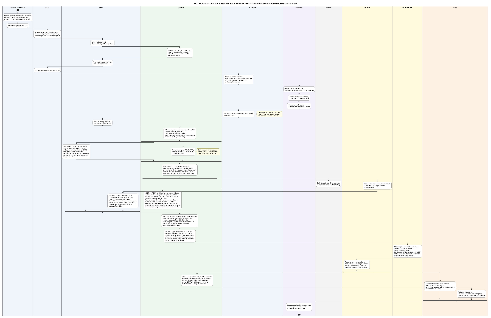

Diagram 00f · PlantUML activity diagram with lanes
One fiscal year from plan to audit: who acts at each step, and which record is written there (national government agency)
Question: For one fiscal year, which authority acts at each step from plan to audit, where do two lines of work run at the same time and then have to meet, and at which step is each record written?

What the diagram shows
- Question: for one fiscal year, which authority acts at each step from plan to audit, where do two lines of work run at the same time and then have to meet, and at which step is each record written?
- Idea: the steps of deciding (plan, fiscal frame, proposal, law) follow one another. In execution, two lines of work run at the same time three times, and each time both must be finished before the next step. The records are not a last step: the text of each step names the record that is written at that step. Only the closing of a period and the audit of the statements follow the calendar.
- How to read it: one column (lane) = one authority. Read from top to bottom. A thick horizontal bar that splits the flow = the branches run in parallel. The bar that closes them = BOTH branches must be finished before the next step. A line that starts with "Record:" names what is written at that step, and by which unit.
- Why PlantUML: Mermaid has no activity diagram with lanes and parallel bars.
- Why the records stand at every act: the Manual shows that the registries are written at the allotment and at the obligation, the first journal entry at the receipt of the NCA, and the payable at the accepted delivery [GAM-V1 Annex H]. The certificate "cash available" on the voucher is a separate step, because it is the point where the claim meets the cash authority [GAM-V1 Ch.6 s.12].
- Sources: [PRIMER] [NBM156] [CONST] [NBC599] [RA12009] [PD1445 s.41, s.86] [GAM-V1 Ch.3, Ch.6 s.12, s.56, Ch.19 s.60, Ch.21, Annex H] [GAM-V2 App.32] [CL2013-16A] [JC2019-1] [COA2011-002]. Steps marked (GK) are general knowledge, not opened in a source during this work.
Code

@startuml 00f_end_to_end_swimlane
' QUESTION THIS DIAGRAM ANSWERS: for one fiscal year, which authority acts at each step from plan to audit, where do two lines of work run at the same time and then have to meet, and at which step is each record written?
' IDEA: the steps of deciding (plan, fiscal frame, proposal, law) follow one another. In execution, two lines of work run at the same time three times, and each time both must be finished before the next step. The records are not a last step: the text of each step names the record that is written at that step. Only the closing of a period and the audit of the statements follow the calendar.
' READING: one column (lane) = one authority. Read from top to bottom. A thick horizontal bar that splits the flow = the branches run in parallel. The bar that closes them = BOTH branches must be finished before the next step. A line that starts with "Record:" names what is written at that step, and by which unit.
' WHY PLANTUML: Mermaid has no activity diagram with lanes and parallel bars.
' WHY THE RECORDS STAND AT EVERY ACT: the Manual shows that the registries are written at the allotment and at the obligation, the first journal entry at the receipt of the NCA, and the payable at the accepted delivery [GAM-V1 Annex H]. The certificate "cash available" on the voucher is a separate step, because it is the point where the claim meets the cash authority [GAM-V1 Ch.6 s.12].
' SOURCES: [PRIMER] [NBM156] [CONST] [NBC599] [RA12009] [PD1445 s.41, s.86] [GAM-V1 Ch.3, Ch.6 s.12, s.56, Ch.19 s.60, Ch.21, Annex H] [GAM-V2 App.32] [CL2013-16A] [JC2019-1] [COA2011-002]. Steps marked (GK) are general knowledge, not opened in a source during this work.
title 00f One fiscal year from plan to audit: who acts at each step, and which record is written there (national government agency)
skinparam shadowing false
skinparam defaultFontName SansSerif
skinparam defaultFontSize 12
skinparam ActivityBackgroundColor #FFFFFF
skinparam ActivityBorderColor #444444
skinparam ArrowColor #333333
skinparam NoteBackgroundColor #FFFDE7
skinparam NoteBorderColor #8A6D00
skinparam SwimlaneBorderColor #777777
skinparam SwimlaneTitleFontStyle bold
|#EEF4FB|DEPDev, ED Council|
start
:Update the development plan priorities,
the Public Investment Program (PIP)
and the infrastructure program (TRIP);
:Appraise large projects (ICC);
|#EEF4FB|DBCC|
:Set macroeconomic assumptions,
revenue program, spending ceiling,
deficit target and borrowing program;
|#EEF4FB|DBM|
:Issue the Budget Call
(National Budget Memorandum);
|#EDF7ED|Agency|
:Prepare Tier 1 (ongoing) and Tier 2
(new or expanded) proposals.
Consult RDCs and civil society.
Encode in OSBPS;
|#EEF4FB|DBM|
:Technical budget hearings
and executive review;
|#EEF4FB|DBCC|
:Confirm the proposed budget levels;
|#EEF4FB|President|
:Approve with the Cabinet.
Submit NEP, BESF and Budget Message
within 30 days from the opening
of the regular session;
|#F3EEFA|Congress|
:House: committee hearings,
General Appropriations Bill, three readings;
:Senate: committee hearings,
amendments, three readings;
:Bicameral conference.
Both chambers ratify the report;
|#EEF4FB|President|
:Sign the General Appropriations Act (GAA).
May veto items;
note right
If no GAA is in force on 1 January,
the previous GAA is re-enacted
until the new one takes effect
end note
|#EEF4FB|DBM|
:Issue release guidelines
(National Budget Circular);
|#EDF7ED|Agency|
:Submit budget execution documents in URS:
financial plan, physical plan,
monthly disbursement program.
Record: budget unit enters the appropriation
in its registry. No journal entry;
fork
|#EEF4FB|DBM|
:ALLOTMENT (authority to commit):
GAA as allotment order for items
without conditions, SARO or GARO
through ADRS for the others.
Record: the budget unit of the agency
enters the allotment in its registries.
No journal entry;
fork again
|#EDF7ED|Agency|
:Procurement plan (PPMP, APP),
bidding in PhilGEPS, evaluation,
post-qualification;
note right
Early procurement may start
before the GAA, but no award
before funding is effective
end note
end fork
|#EDF7ED|Agency|
:MEETING POINT 1: allotment + award.
Award. Chief accountant certifies that funds
are available. Head of agency signs the contract.
Record: budget unit enters the OBLIGATION
(obligation request, registry). No journal entry;
fork
|#F2F2F2|Supplier|
:Deliver goods, services or works.
Submit delivery receipt and billing;
|#EDF7ED|Agency|
:MEETING POINT 2: obligation + accepted delivery.
Inspection officer inspects, property custodian
accepts (acceptance report). The amount is now
a payable, due and demandable.
Record: accounting unit makes the journal entry
for the asset or expense and the PAYABLE.
Requesting office prepares the voucher (Box A).
Accounting checks it against the obligation request,
the acceptance report and the index of payments;
fork again
|#FFF8DC|BTr, BSP|
:Receive collections and loan proceeds
in the Treasury Single Account.
Forecast cash;
|#EEF4FB|DBM|
:CASH AUTHORITY: issue the NCA
to the servicing bank, based on the
monthly disbursement program.
Record: the accounting unit of the agency
makes its first journal entry (Cash-MDS,
Regular) and enters the NCA in its
registry of the NCA;
end fork
|#EDF7ED|Agency|
:MEETING POINT 3: claim in order + cash authority.
Head of accounting certifies "cash available"
from the registry of the NCA (Box C).
Head of agency approves for payment (Box D).
Record: the amount is marked as used
in the registry of the NCA;
:Issue the payment order (LDDAP-ADA)
with its summary list (SLIIE), or a check.
Record: cash unit lists it in the daily report
of payment orders issued. Accounting unit
makes the journal entry. Budget unit enters
the payment in its registries;
|#FFF8DC|Servicing bank|
:Check signatures and NCA balance.
Debit the MDS sub-account.
Credit the payee account.
Send a copy of the summary list to BTr
on the same day. Return the validated
payment order to the agency;
|#FFF8DC|BTr, BSP|
:Replenish the servicing bank
from the Treasury Single Account.
Record: books of the Treasury
(Subsidy to NGAs, Cash in Bank);
fork
|#FDF1E3|COA|
:After each payment: audit the paid
voucher and its documents.
Issue observations, notices of suspension,
disallowance or charge;
fork again
|#EDF7ED|Agency|
:At the end of each month, quarter and year:
reconcile the books with the bank, prepare
the trial balance, remit taxes withheld,
report (BFARs in URS), send year-end
statements to COA by 14 February;
|#FDF1E3|COA|
:Audit the statements.
Issue the audit report of the agency
and the annual report by 30 September;
end fork
|#F3EEFA|Congress|
:Use audit and performance reports
in oversight and in the next
budget deliberations (GK);
stop
@enduml